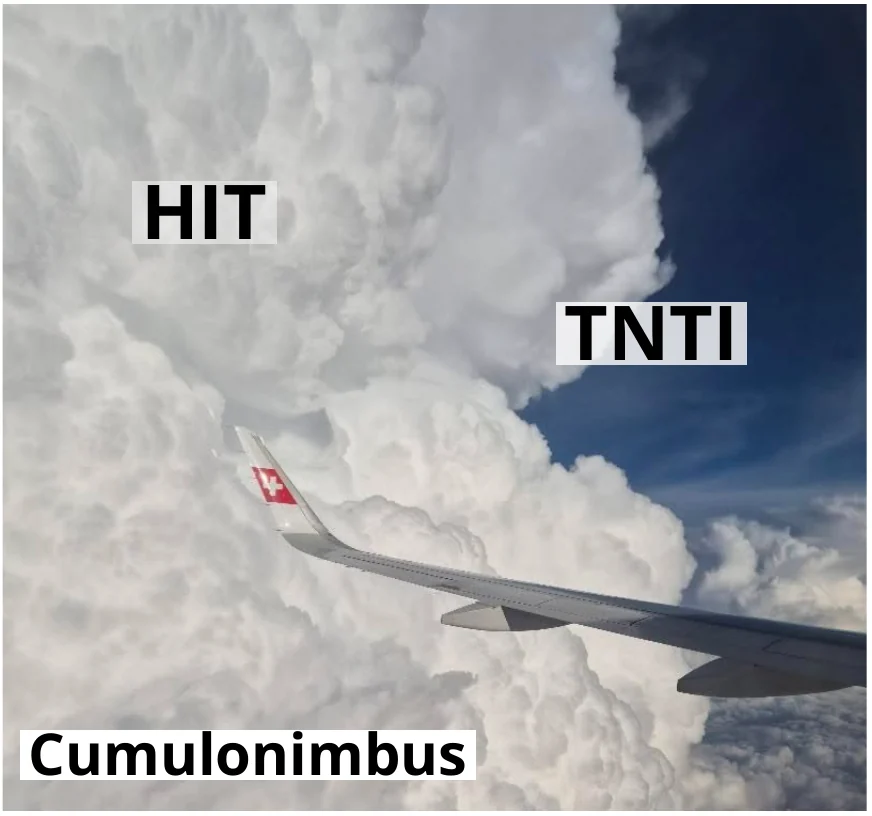
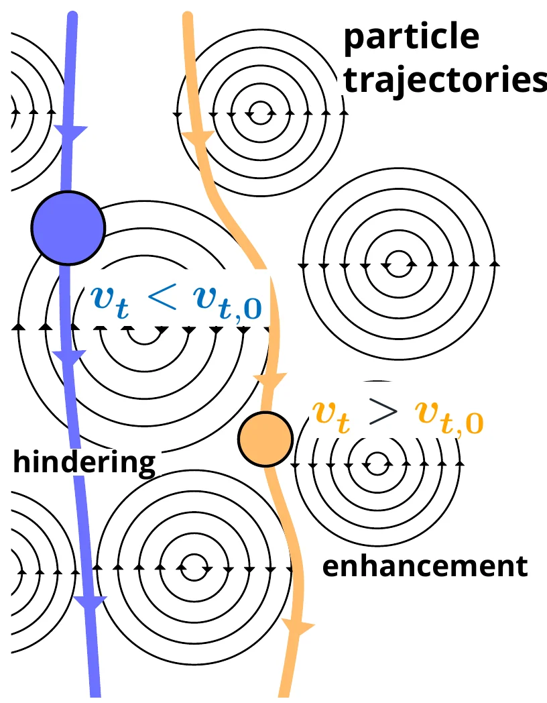
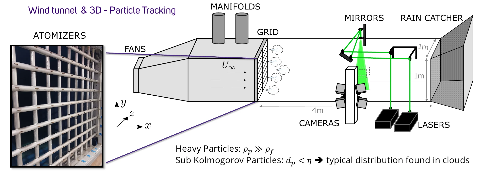
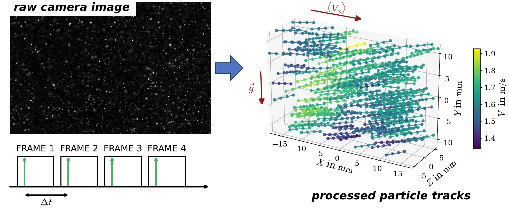
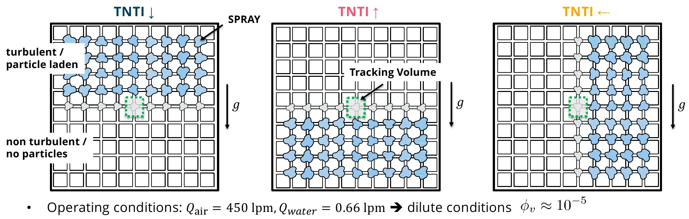
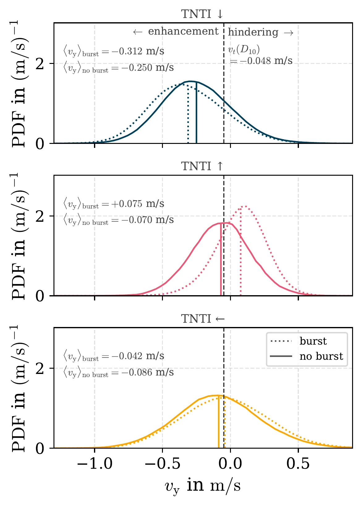
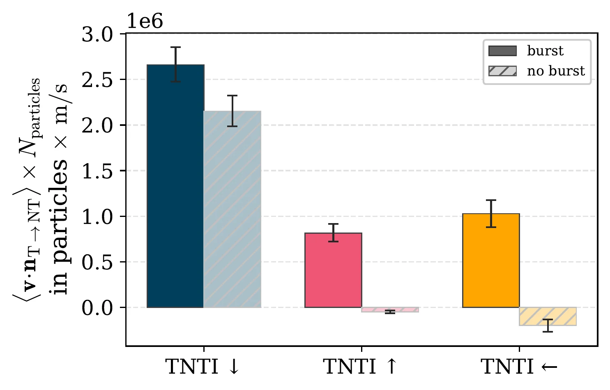

Quick facts
- Uncertainties in droplet growth rates remain an unsolved problem → turbulence-driven collision-coalescence could be an explanation
- Turbulent interfaces are an essential element of clouds, where the interaction with droplets could cause coupling to other physical processes through condensation and evaporation
- We use particle tracking in wind tunnel experiments to learn more about the dynamics of inertial particles in turbulent interfaces
- The data shows that intermittent events strongly influence the settling velocity and transport of particles
- We are planning to build physical models with Reduced Order Modeling (ROM) to incorporate observed small scale physics into large-scale cloud models such as Super Droplet Methods
Motivation
While cloud models have made significant progress, they still contribute to the largest uncertainties in climate models (Bony et al., 2015). One unsolved problem remains the evolution of droplet size distributions inside clouds and the onset of precipitation. Droplet growth starts with condensation of water vapor onto cloud condensation nuclei (CCN); around 20 micrometers, this process becomes too slow to explain the transition to drizzle droplets, for which the collection of smaller drops can well explain growth. Turbulence-driven collision-coalescence has been suggested as a driving force (Shaw, 2003).

Modeling this phenomenon requires accurate modeling of the droplet physics down to the smallest scales of turbulence in cloud conditions. Wind tunnel experiments can provide insight into realistic particle interactions across a wide range of turbulence conditions comparable to those found in clouds (Bateson & Aliseda, 2012).
Background
Turbulence in clouds: Clouds form when warm, humid air rises and cools until water vapor condenses out. Instabilities that develop through buoyancy and shear cause large-scale energetic eddies 𝒪(100 m) (integral scale), which transfer their energy down to smaller scales at which energy is dissipated 𝒪(1 mm) (Kolmogorov Scale) (Shaw, 2003). Turbulence conditions in clouds are highly inhomogeneous: at cloud edges, turbulent air meets non-turbulent air, and inside clouds, different regions have different turbulent intensities (Bodenschatz et al., 2010).
These regions form turbulent interfaces, characterized by regions of irrotational (non-turbulent) and rotational (turbulent) fluid, or by regions of different turbulent intensities. A thin interface layer separates the regions, where viscous effects match the vorticity of the different regions, causing a sharp jump in fluid properties. Two mechanisms entrain ambient fluid into the turbulent region, causing the interface region to grow. Engulfment is large-scale entrainment, and nibbling is small-scale viscous entrainment of ambient fluid (Da Silva et al., 2014).
In clouds, interfaces drive interesting multiphysics by entraining dry air, causing local changes in temperature, supersaturation, buoyancy, and droplet-size distributions.
Inertial particle dynamics: Whether a particle follows a fluid flow depends on how long it takes to adjust to the fluid velocity around it because of its inertia (particle response time τp), relative to the eddy turnover time. Particles with larger τp slip past the fluid flow longer until their velocity matches the fluid. We quantify this effect with the Stokes number St = τp / τeddy. Cloud droplets have non-negligible inertia compared to the smallest scale of the turbulent flow (the Kolmogorov length scale). These particles are called inertial particles; they do not follow the smallest fluctuations in the turbulent flow.
This has important impacts on particles in turbulent flows:
- Crossing-trajectories effect: Particles cross fluid-element trajectories due to gravitational settling, weakening long-term turbulent dispersion (Csanady, 1963).
- Settling modification: When the particle Stokes number St ≈ 1, particles tend to spend more time on the downward-sweeping side of eddies, causing them to settle out faster on average (Maxey, 1987), called settling enhancement. Some evidence also suggests that heavier particles with St ≫ 1 tend to spend more time on the upward-sweeping side of eddies, causing them to settle out more slowly on average (Nielsen, 1993), called hindering.

Settling modification: hindering (vt < vt,0) and enhancement (vt > vt,0). - Preferential concentration: Particles are swept out of vortex cores due to their inertia, and they preferentially concentrate in regions of low vorticity and high strain rate, leaving behind void and clustered regions. In homogeneous isotropic turbulence, the size of clusters is of the order of 10 Kolmogorov length scales. Increasing the local concentration increases the likelihood of particle collisions (Aliseda et al., 2002; Eaton & Fessler, 1994).
These effects have been well studied for particles in homogeneous turbulence, and we recently began focusing on inhomogeneous conditions such as turbulent interfaces (Ferran et al., 2024; Good et al., 2012).
Experimental setup

| Test section | 1×1×4 m |
|---|---|
| Velocity U∞ | 1–4 m/s |
| Kolmogorov η | 300 µm |
| Kolmogorov τη | 6 ms |
| Droplets D10 | 40.5 µm |
| Droplets τp(D10) | 5 ms |
| Droplets D32 | 98 µm |
| Vol. fraction φv | 10−5 |
Methods
We perform measurements in a wind tunnel at the University of Washington designed to replicate cloud-like turbulence conditions and droplet sizes. Inside the test section, we create a polydisperse droplet-size distribution using an array of atomizers (Bateson & Aliseda, 2012). The flow created by the atomizers significantly impacts the turbulent intensity in the wind tunnel, allowing us to create different regions of turbulent intensity. In a small measurement volume at the center of the turbulent interface, we illuminate particles with pulsed lasers. The lasers allow us to capture 4 consecutive particle positions that can be linked to tracks, enabling us to calculate velocities and accelerations for individual particles.

Results
We investigate how the orientation of the turbulent interface with respect to gravitational acceleration changes the particle dynamics, and report 3 cases:

- TNTI ↓: gravity is assisting transport
- TNTI ↑: gravity is hindering transport
- TNTI ←: gravity doesn't impact transport
To quantify the impact of intermittent events on our results we condition the particle velocities (Ux) on "burst events", which are characterized by significant deviations from the mean flow velocity ⟨ux⟩, where u′x is the fluid rms.
Droplet settling velocity

Particle tracking does not allow us to determine droplet sizes; therefore, we compare settling to vt(D10).
Without bursts, the mean settling velocity increases, agreeing with observations under homogeneous turbulence conditions. Bursts significantly shift the mean and skewness of the distribution when gravitational acceleration influences the transport. Without gravitational acceleration, the distribution widens.
Particle flux towards the non-turbulent side

Gravitational acceleration significantly assists transport across the interface. Transport occurs only during burst events without the support of gravitational acceleration.
We're currently looking at the physics of particle-pair dynamics which would allow more physical collision kernel models.
The results shown are work in progress and to be published.
References
- Aliseda, A., Cartellier, A., Hainaux, F., & Lasheras, J. C. (2002). Effect of preferential concentration on the settling velocity of heavy particles in homogeneous isotropic turbulence. Journal of Fluid Mechanics, 468, 77–105. https://doi.org/10.1017/S0022112002001593
- Bateson, C. P., & Aliseda, A. (2012). Wind tunnel measurements of the preferential concentration of inertial droplets in homogeneous isotropic turbulence. Experiments in Fluids, 52(6), 1373–1387. https://doi.org/10.1007/s00348-011-1252-6
- Bodenschatz, E., Malinowski, S. P., Shaw, R. A., & Stratmann, F. (2010). Can we understand clouds without turbulence? Science, 327(5968), 970–971. https://doi.org/10.1126/science.1185138
- Bony, S., Stevens, B., Frierson, D. M. W., Jakob, C., Kageyama, M., Pincus, R., Shepherd, T. G., Sherwood, S. C., Siebesma, A. P., Sobel, A. H., Watanabe, M., & Webb, M. J. (2015). Clouds, circulation and climate sensitivity. Nature Geoscience, 8(4), 261–268. https://doi.org/10.1038/ngeo2398
- Csanady, G. T. (1963). Turbulent diffusion of heavy particles in the atmosphere. Journal of the Atmospheric Sciences, 20(3), 201–208. https://doi.org/10.1175/1520-0469(1963)020<0201:TDOHPI>2.0.CO;2
- Da Silva, C. B., Hunt, J. C. R., Eames, I., & Westerweel, J. (2014). Interfacial layers between regions of different turbulence intensity. Annual Review of Fluid Mechanics, 46(1), 567–590. https://doi.org/10.1146/annurev-fluid-010313-141357
- Eaton, J. K., & Fessler, J. R. (1994). Preferential concentration of particles by turbulence. International Journal of Multiphase Flow, 20, 169–209. https://doi.org/10.1016/0301-9322(94)90072-8
- Ferran, A., Obligado, M., & Aliseda, A. (2024). Inertial particles in a turbulent/turbulent interface. International Journal of Multiphase Flow, 179, 104911. https://doi.org/10.1016/j.ijmultiphaseflow.2024.104911
- Good, G. H., Gerashchenko, S., & Warhaft, Z. (2012). Intermittency and inertial particle entrainment at a turbulent interface: The effect of the large-scale eddies. Journal of Fluid Mechanics, 694, 371–398. https://doi.org/10.1017/jfm.2011.552
- Maxey, M. R. (1987). The gravitational settling of aerosol particles in homogeneous turbulence and random flow fields. Journal of Fluid Mechanics, 174, 441–465. https://doi.org/10.1017/S0022112087000193
- Nielsen, P. (1993). Turbulence effects on the settling of suspended particles. Journal of Sedimentary Research, 63(5), 835–838. https://doi.org/10.1306/D4267C1C-2B26-11D7-8648000102C1865D
- Shaw, R. A. (2003). Particle-turbulence interactions in atmospheric clouds. Annual Review of Fluid Mechanics, 35(1), 183–227. https://doi.org/10.1146/annurev.fluid.35.101101.161125
Conference paper
Reis, J., Ferran, A., Obligado, M., & Aliseda, A. (2026). Effect of gravity on sub-Kolmogorov inertial particles in a turbulent-non turbulent interface. TSFP14. http://www.tsfp-conference.org/proceedings/2026/195.pdf